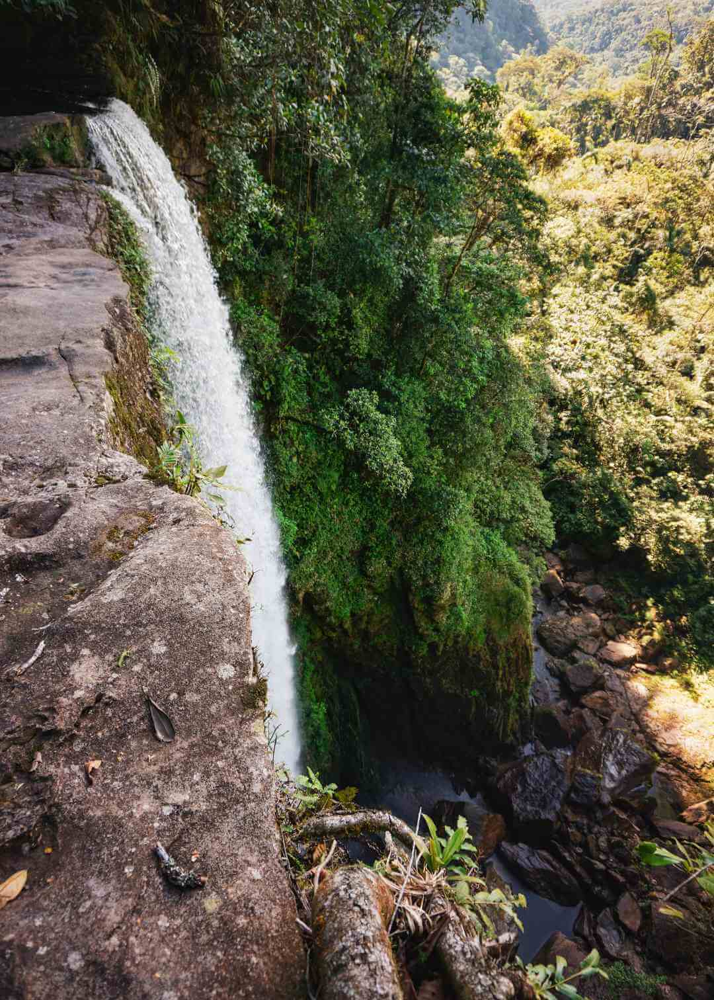
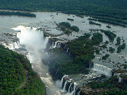
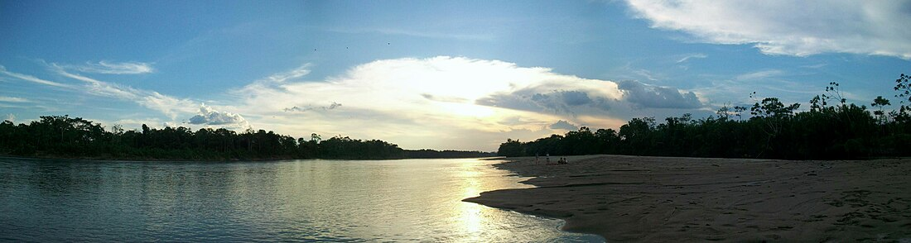
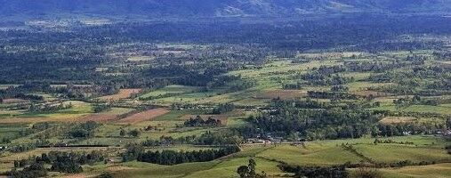
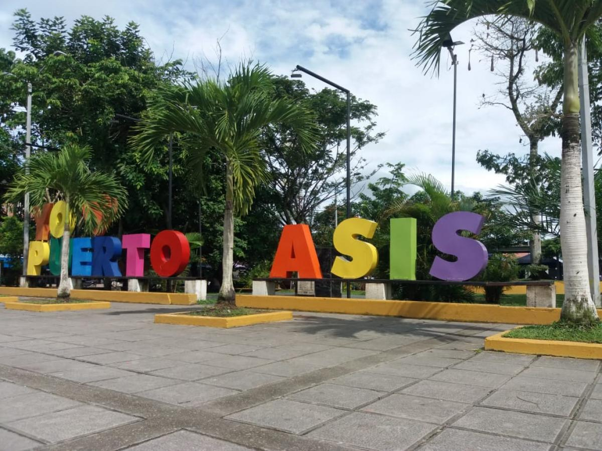

Putumayo, Colombia
Descripción
Putumayo, ubicado en el suroeste de Colombia y parte de la región amazónica, es un departamento que se distingue por su vasta biodiversidad, su rica herencia cultural indígena y su ubicación estratégica que lo conecta con Ecuador y Perú. Con una altitud que varía desde los 200 hasta los 4.500 metros sobre el nivel del mar, este territorio abarca selvas densas, ríos caudalosos como el Putumayo, y paisajes que incluyen tanto la Amazonía como la cordillera andina. Su capital, Mocoa, es un centro vibrante conocido por sus cascadas y su historia ligada a las misiones católicas desde el siglo XVI. La población, cercana a los 374,042 habitantes, depende en gran medida de actividades como la agricultura, la extracción de petróleo y el cultivo de coca, lo que ha marcado su economía y su historia social. La cultura putumayense se enriquece con la presencia de pueblos indígenas como los Cofán, Kamentxá y Siona, cuyos conocimientos tradicionales, incluyendo el uso del yagé, atraen a turistas interesados en la espiritualidad y el ecoturismo. Sin embargo, el departamento enfrenta retos como la deforestación, la pobreza (con tasas superiores al 47%) y la influencia de actividades ilícitas, aunque también se esfuerza por promover un desarrollo sostenible y preservar su patrimonio natural y cultural.
Sitios Turísticos
Putumayo, con su ubicación en la región amazónica y su diversidad ecológica, ofrece una serie de destinos turísticos que combinan naturaleza exuberante con tradiciones culturales. A continuación, te presentamos una selección de los sitios más destacados, acompañados de imágenes que reflejan su esplendor:
- Cascada del Fin del Mundo: Ubicada cerca de Mocoa, esta impresionante cascada de 70 metros de altura es un espectáculo natural rodeado de selva tropical. Es ideal para caminatas y avistamiento de aves, con un ambiente místico que atrae a amantes de la aventura.

- Parque Nacional Natural La Paya: Este parque protege una vasta extensión de selva amazónica, hogar de especies como el jaguar y el delfín rosado del Amazonas. Ofrece oportunidades para ecoturismo y aprendizaje sobre la biodiversidad local.

- Río Putumayo: Un río majestuoso que atraviesa el departamento, ideal para paseos en bote y pesca. Sus aguas conectan comunidades y ofrecen vistas panorámicas de la selva, siendo un recurso vital para la región.

- Sibundoy Valley: Conocido por sus tradiciones indígenas, este valle alberga comunidades Kamentxá e Inga, famosas por sus artesanías y prácticas medicinales con yagé. Es un lugar de gran valor cultural y espiritual.

- Puerto Asís: La ciudad más poblada de Putumayo, ubicada cerca de la frontera con Ecuador, ofrece un punto de acceso al río y mercados locales. Es un centro comercial y cultural con un creciente interés turístico.

Comida Típica
La gastronomía de Putumayo está influenciada por su ubicación amazónica y la diversidad cultural de sus pueblos indígenas, destacando el uso de pescados de río, frutas tropicales y proteínas locales. A continuación, te presentamos una lista ordenada de los platos más representativos, con detalles sobre su preparación y acompañamientos:
- Mojarra Frita
- Descripción: Un plato popular a base de pescado de río, frito hasta quedar crujiente, que refleja la abundancia acuática de la región. Se sirve con yuca cocida y ensalada, siendo un favorito en las comunidades ribereñas.
- Ingredientes Principales: Mojarra, yuca, limón, tomate, cebolla, cilantro.
- Sopa de Carachama
- Descripción: Esta sopa nutritiva utiliza la carachama, un pez de agua dulce típico de la Amazonía, cocinado con especias y vegetales. Es un plato reconfortante que se disfruta en familia, especialmente en climas húmedos.
- Ingredientes Principales: Carachama, plátano verde, yuca, ajo, comino, hierbas locales.
- Patacones con Queso
- Descripción: Preparados con plátano verde aplastado y frito, estos patacones se sirven con queso fresco derretido. Es un aperitivo o acompañamiento sencillo que resalta los sabores tropicales de Putumayo.
- Ingredientes Principales: Plátano verde, queso fresco, sal, aceite.
- Caldo de Gallina Criolla
- Descripción: Un caldo tradicional hecho con gallina de corral, tubérculos y hierbas, que aporta un sabor rústico y reconfortante. Es común en celebraciones y reuniones comunitarias.
- Ingredientes Principales: Gallina criolla, papa, yuca, cilantro, cebolla.
- Jugo de Cocona
- Descripción: Hecho con la cocona, una fruta amazónica ácida, este jugo refrescante se consume como bebida típica. Se endulza con azúcar o miel y es popular entre locales y visitantes.
- Ingredientes Principales: Cocona, agua, azúcar o miel, limón opcional.